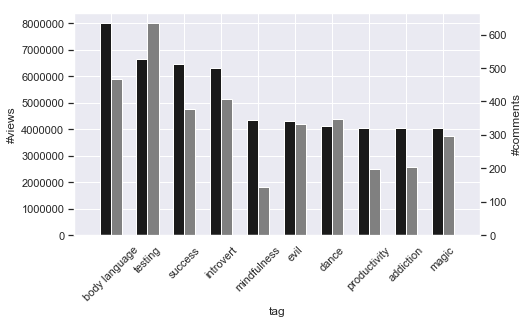
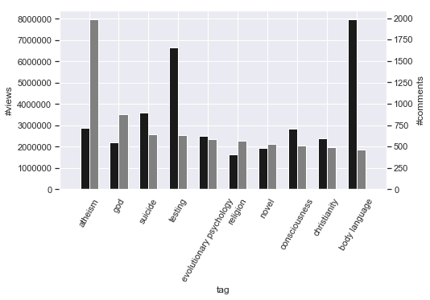
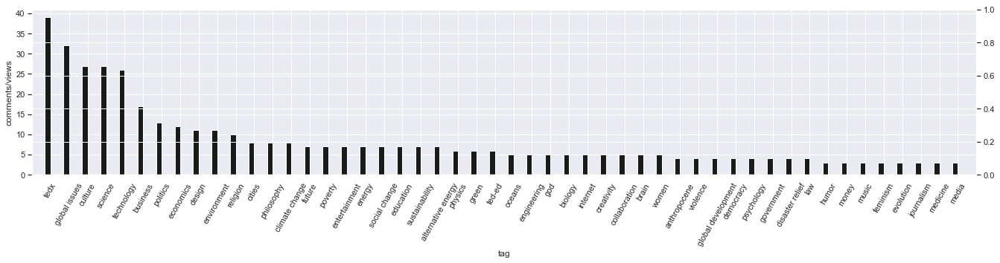
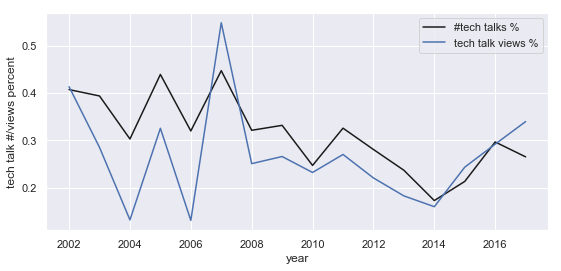
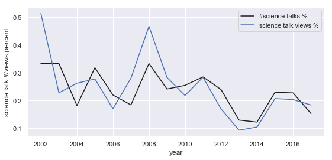
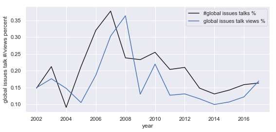

Besides of watching the TED talks and get the idea, passion, and inspiration from it, I dig into the TED Talks dataset and try to find some interesting things that cannot be discovered via a single talk.
Key Words
Natural Language Processing | Exploratory Analysis
NLTK | spaCy | Pandas & Seaborn
Methods
Vectorize the speakers' occupation
Vectorize the talks' topics
Calculate the cos distance of the speaker’s occupation and the topics of their talk
Here are the 3 talks with the lowest similarity.
Gabby Giffords
Be passionate. Be courageous. Be your best.Malte Spitz
Your phone company is watchingThe heroku app may sleep without people visiting. So please wait about 20 seconds for the page to open, thanks!
Search the OccupationsMethods
Split the 'tags' column into rows & group by this new tag column
Calculate mean of each tag group
Order by #views, #comments, and the value of #comments divided by #views separately
Findings
Finding 1: People are more likely to watch the talks which have the interesting content or about introspect.

Finding 2: People are more likely to express their own opinions after watching the talks about religion and psychology.

Finding 3: Combine the views and the participation, global issues, culture, and science are the top 3 topics. Also, the TEDx talks very successful on this criteria.

Finding:
TED viewers’ tastes are not fluctuated too much in the past years.
Methods:
I’ve selected 3 topics at the top of the #comments/#views rank.
Technology
There is a view peak in 2007. Besides of that, however, the technology talk kind of keep pile up in excess of requirement in the past 20 years.

Science
Compare to technology topic, TED viewers have more passion about science. Let along the two sharpe peaks in 2002 and 2008. The #views created by the science talks are very close and higher than the %talks TED provide for most of the time.

Global Issues
We can clearly see the lagging in the plot of global issues, especially during 2003 to 2009. This may be a undirected prove of the sensitivity of TED, like they recorded the talks even before the specific global issue be noticed by people and mass media.
